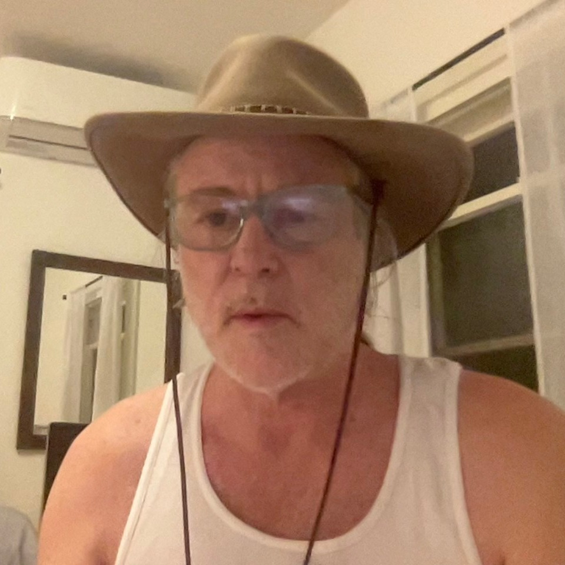

About Us
About Us

Ian Beardsley studied physics at The University of Oregon and worked in astronomy For four years at the state observatory, Pine Mountain Observatory in the high desert East of Bend, Oregon. His name appears on several papers in the Astrophysical Journal.
The Earth A Habitable Plane... by Ian Beardsley
The Earth A Habitable Plane... by Ian Beardsley
The Earth A Habitable Plane... by Ian Beardsley
Solving The Solar System Wi... by Ian Beardsley
Our Solar System As A Solut... by Ian Beardsley
Our Solar System As A Solut... by Ian Beardsley
Predicting The Science of P... by Ian Beardsley
Life As A Natural Property ... by Ian Beardsley